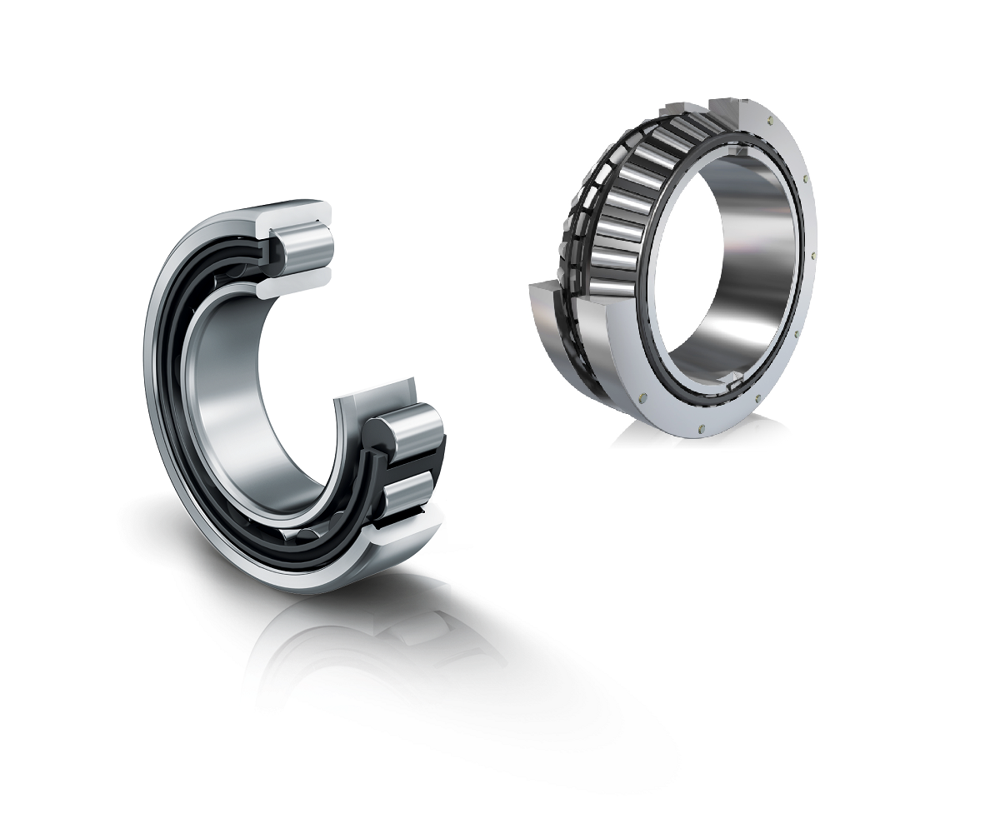

<ng-container *transloco="let t; read: 'bearing'">
  <div
    *ngrxLet="bearingSelectionType$; let selectionType"
    class="flex h-full max-w-full flex-col"
  >
    <ga-qualtrics-info-banner
      class="block mb-3 md:mb-6 px-4"
    ></ga-qualtrics-info-banner>
    <schaeffler-subheader
      [subheaderTitle]="t('title.main')"
      [hideLine]="true"
      [showBackButton]="false"
    >
      <ng-container subheaderBlockContent>
        {{ t('title.sub') }}
      </ng-container>
    </schaeffler-subheader>
    <div class="container mx-auto md:max-w-2xl">
      <div class="mb-4 text-center md:text-left">
        <mat-slide-toggle
          color="primary"
          labelPosition="before"
          [checked]="selectionType === bearingSelectionType.AdvancedSelection"
          (change)="toggleBearingSelectionType($event)"
        >
          {{ t('bearingSelection.button.advancedSelection') }}
        </mat-slide-toggle>
      </div>
      <ga-advanced-bearing-selection
        *ngIf="
          selectionType === bearingSelectionType.AdvancedSelection;
          else quick_bearing_selection
        "
      ></ga-advanced-bearing-selection>
      <ng-template #quick_bearing_selection>
        <div class="px-4 md:px-0">
          <ga-quick-bearing-selection
            [showSelectButton]="true"
          ></ga-quick-bearing-selection>
        </div>
        
      </ng-template>
    </div>
  </div>
</ng-container>
